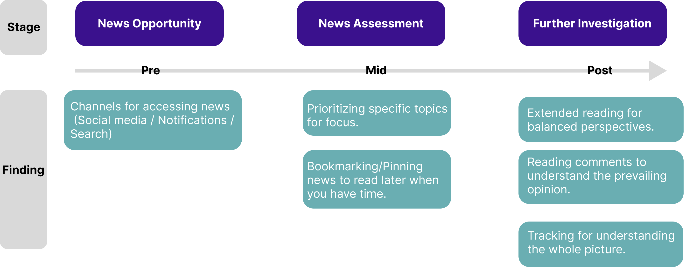
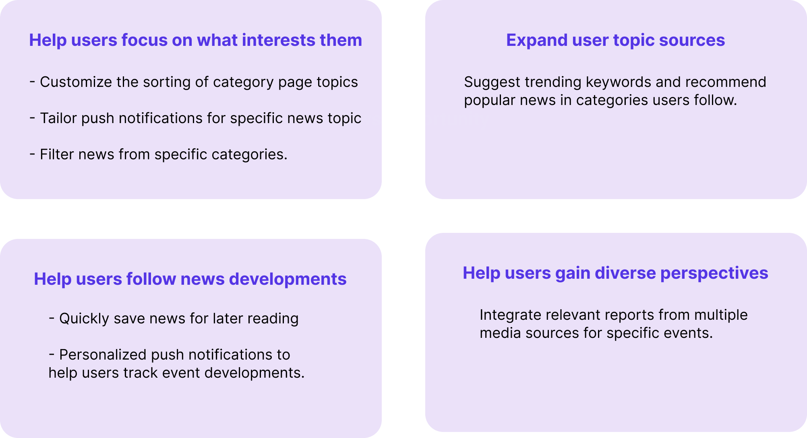
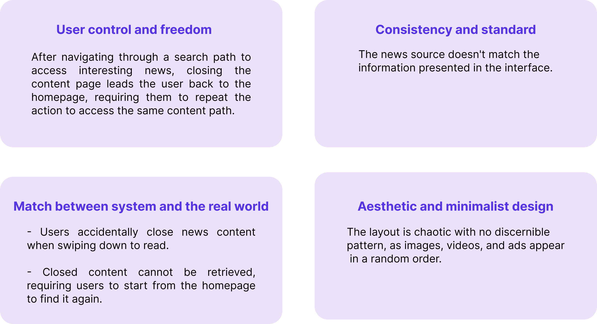

Feb. 2022 - Jul. 2022 (6 months)
5 UX Researcher
Project Management, UX Research
Research Report (Delivered two formal presentations to the entire Yahoo App team)

Feb. 2022 - Jul. 2022 (6 months)
5 UX Researcher
Project Management, UX Research
Research Report (Delivered two formal presentations to the entire Yahoo App team)
Feb. 2022 - Jul. 2022 ( 6 months)
5 UX Researcher
Project Management, UX Research
Research Report (Delivered two formal presentations to the entire Yahoo App team)
This project was collaborated with Yahoo App as part of an industry-academia partnership. Working closely with the UX Lead and Project Manager, our objective was to address specific business challenges and deliver a comprehensive research report. The project comprised two main phases: the exploration phase, where we aimed to understand the needs of the target market users to provide design feature recommendations, and the evaluation phase, which focused on assessing Yahoo App to identify existing design issues.
Yahoo App is a Super App that provides a wide range of lifestyle services, with a strong focus on user growth. However, it faces a challenge in reaching the Gen Z (16-25 years old) demographic. To tap into this market, we conducted UX research to identify design opportunities.
As Gen Z is a crucial demographic for Yahoo App, we aimed to achieve the following from a user growth
perspective:
- Understanding the news consumption habits of the Gen Z
generation
- Providing design recommendations that are appealing to Gen Z
- Identifying current usability issues in the Yahoo App user
experience
Due to research constraints, our focus was primarily on exploring the news features.
In the Explore phase, our primary objective was to identify features that would be appealing to the Gen Z demographic and enhance their usage motivation. In the initial step, the team conducted in-depth interviews from a qualitative perspective with the target audience Yahoo App aimed to reach. We focused on gathering data related to news consumption behavior, motivations, needs, and pain points to serve as entry points for converting into design recommendations.
During this phase, a total of 11 formal interviews were conducted, with respondents aged between 21-25 years old. The interview data was analyzed using affinity diagrams to synthesize the research findings.

The research findings can be roughly categorized into three stages: News Opportunity, News Assessment, and Further Investigation, which can be seen as the pre, mid, and post stages of information reception.
During the in-depth interviews, the team extracted research findings from
the interview data. In this phase, we attempted to analyze products in the market that provide news
services, systematically breaking down the features of various apps. The first step involved assessing
whether these features could attract Gen Z users. We then used the research findings from the in-depth
interviews as a foundation to consider whether Yahoo App could draw inspiration or offer
differentiation.
In this stage, we primarily focused on apps with a rating of 4 stars or above and those available for
free in the 'News' section of the App Store. We identified the top 50 products and deconstructed Yahoo
App's information functions into six major categories: Home Feed, Category Pages, News Articles, Push
Notifications, Search, and Advertising. Finally, the team evaluated whether these 50 products possessed
these six features and examined their completeness. After a series of filters and assessments, we
selected 10 products for further analysis, as shown in the chart below.

Integrating the results from in-depth interviews and competitive analysis, the team initially compiled recommendations for development in four key areas. To further refine these development recommendations and identify features that would be appealing to the Gen Z demographic, we planned to conduct a survey
After the team had preliminary development recommendations, to further
understand which among the many development suggestions would genuinely appeal to the Gen Z demographic
and to investigate the impact of advertising on the platform's user experience, we planned to conduct a
survey analysis. This analysis would be divided into three steps.
The first step involved using descriptive statistics to understand Gen Z's perceptions of advertising.
Linear regression would be employed to analyze whether the frequency of news consumption in a news app
is affected by advertising.
The second step aimed to explore which forms of advertising are more acceptable to the Gen Z
demographic, considering not only a user-centric perspective but also a business perspective.
The final step would involve using the Kano Model to gauge the attractiveness level of each feature.
Descriptive statistics reveal that most Gen Z individuals, who generally consume news, find news
page advertising bothersome (N=253), as shown in the graph (vertical axis representing bother
percentage, horizontal axis representing news consumption frequency).
However, when using linear regression to examine if news consumption frequency is influenced by
advertising, the effect doesn't reach significance (p value > .05). Hence, users aren't
disrupted by advertising when consuming news.
While the regression analysis indicates no impact on news consumption frequency by advertising
in the Gen Z demographic, descriptive statistics still show that the majority of Gen Z
individuals find advertising very bothersome. Therefore, the team believes that, from both
Yahoo's perspective and statistical analysis, advertising can still be retained in the Yahoo
App. The next step is to explore how to optimize the advertising experience by reducing
interference."
In the previous phase, we learned that even though advertising does not impact the frequency of Gen Z usage in news apps, it is still a bother to them. Therefore, in this phase, we aimed to explore which forms of advertising are more acceptable to Gen Z. The team tested five advertising formats: Pop-up, Interstitial, Native, Banner, and Full-screen. The results indicated that Native and Banner ads are more acceptable to Gen Z.
After understanding the impact of advertising on the platform experience,
the third step involved using the Kano Model to explore the priority of development recommendations
from the eight (conclusions integrated from in-depth interviews and competitive analysis) based on
their attractiveness to the Gen Z demographic. In prioritizing development features, the Kano
Model's 'Must-Have' is considered the highest priority level, followed by 'One-Dimensional.'
'Indifferent' is not considered at this stage.
The top-priority features, consisting of both Must-Have and One-Dimensional, include:
- Must-Have: Quick temporary storage for news articles to
read
later, Customized sorting of category
page topics, Integration of related reports from multiple media for specific events.
- One-Dimensional: Customized push notifications for specific
topics.

In the Evaluate phase, the goal was to identify design issues within the current Yahoo App. The team initially conducted an internal assessment of the product based on Jakob Nielsen's ten design heuristics, aimed at uncovering more detailed design problems within Yahoo App. In this phase, the team defined three heuristic evaluation tasks: 'Focusing on Specific Content,' 'Browsing News,' and 'Observing and Expressing Ideas.' Following the internal assessment, the team identified five design issues primarily related to the 'Focusing on Specific Content' and 'Browsing News' tasks.
To comprehensively explore the design issues existing in Yahoo App, the team conducted usability testing to assess the product from a user perspective. Additionally, they used the System Usability Scale (SUS) and Net Promoter Score (NPS) to gauge user satisfaction. In the usability testing phase, the team designed five common tasks that users often perform in Yahoo App. They recruited a total of five participants, all from the Gen Z demographic, who regularly consume news through news apps but had not previously used Yahoo App. Among the five tasks, the team identified a total of 10 design issues across 4 categories, and provided corresponding design recommendations.
The team used SUS (System Usability Scale) and NPS (Net Promoter Score) as evaluation metrics for Yahoo
App's overall usability and whether Gen Z users would be willing to recommend it.
- SUS (out of 100): Score: 74.5 (Classified as a fair 'C' grade)
- NPS (out of 10): Score: 6.4 (Falling within the range of not
particularly satisfied)
Based on the results of usability testing, the feedback from most participants highlighted:
- Cluttered User Interface: The interface was criticized for
inconsistent layout, making it difficult to follow the logic of content placement, including videos,
images, and ads.
- Excessive Ad Disruption: Yahoo App was perceived to have an
excessive amount of ads, often causing distraction and blurring the focus.
- Lack of Content Customization: Users expressed frustration at
not being able to focus on their specific areas of interest and having to go through all the information
at once.
Out of the development recommendations proposed by the team and the design issues identified, Yahoo App has implemented a total of 3 design recommendations. The remaining suggestions were not optimized or developed due to challenges in development complexity and time constraints.
The ability to sort topics on category pages to meet the need for easy and quick access to information, with the ability to place one's areas of interest at the front.
If the banner news continuously auto-scrolls without control on an interface already filled with information, it can lead to increased clutter and inconvenience in reading.
By categorizing content under larger categories like sports, weather, and fashion, and providing subcategories within each major category, users can quickly find specific topics of interest, given the abundance of content within each major category.